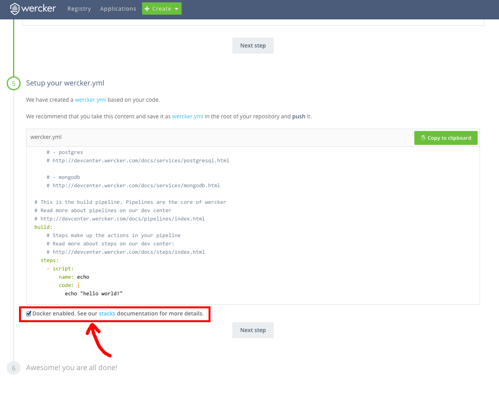

試行錯誤した結果、やり方がわかったので備忘録。
- hugoでサイト作る。
- werckerにアプリを登録
- 自動デプロイ設定をしてgithubのトークンを登録
- wercker.ymlを作ってルートフォルダに置く
1. hugoでサイトを作る
簡単。過去の記事参照で。
あと、publicフォルダはgit管理から外しておく。
2. werckerにアプリを登録
werckerに新規登録して、アプリを登録する。
アプリ登録の際に気をつけるべきはこれ。
→ werckerにアプリを登録するとき、dockerを有効にするチェックをOFFにする

これのせいですごい悩んだ。。
このチェックをOFFです、OFF。
3. 自動デプロイ設定をしてgithubのトークンを登録
werckerでアプリを登録したら、アプリの設定ページへ。
以下もろもろ設定する。
DEPLOY TARGETSを設定する。Add deploy targetはCustom deployを選ぶ。Deploy target nameは適当に分かりやすい名前付ける。Auto deployはチェックを入れて対象のブランチ名を選ぶ。
自分はmasterにプッシュしたらデプロイされるようにしました。Deploy pipelineには、githubで作ったトークンを記述する。
ここで登録した変数をwercker.ymlで使う（自分はGIT_TOKENで登録）
4. プロジェクトのルートフォルダにwercker.ymlを置く
置く。
box: wercker/default
build:
steps:
- arjen/hugo-build:
version: "0.14"
theme: casper
flags: --buildDrafts=true
deploy:
steps:
- lukevivier/gh-pages@0.2.1:
token: $GIT_TOKEN
domain: blog.negimic.com
basedir: public
domain 部分は、カスタム使ってないなら [username].github.io/[repository]かな？
Please comment!